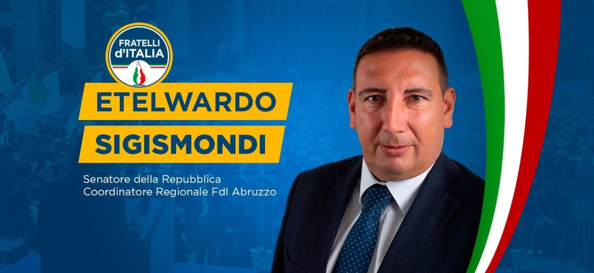
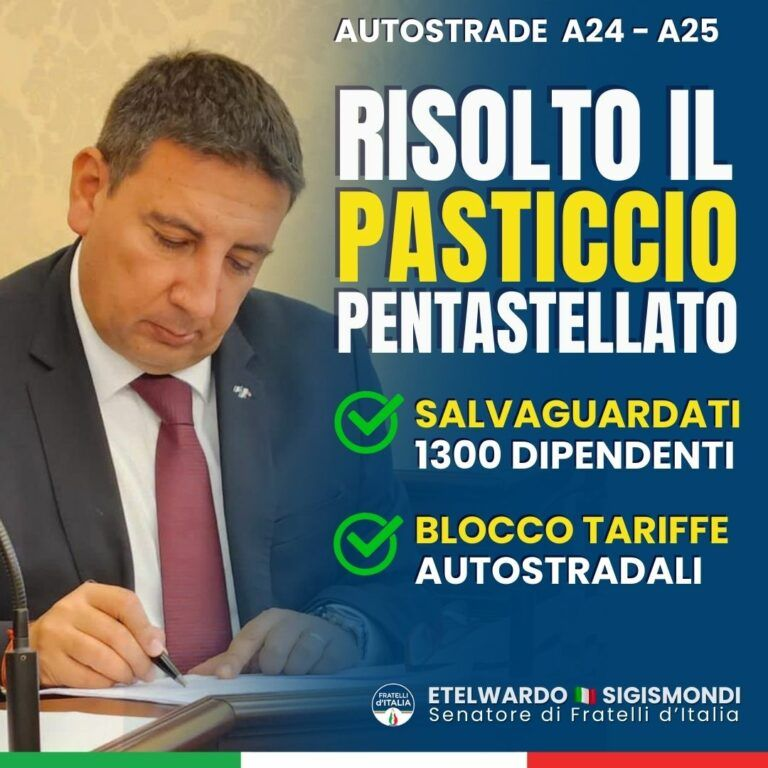

Die Stimme Abruzzos in den Institutionen
Fraktionsvorsitzender von Fratelli d'Italia im 8. Ständigen Ausschuss — Umwelt, ökologischer Wandel, Energie, öffentliche Arbeiten, Kommunikation, technologische Innovation. Architekt, seit über fünfundzwanzig Jahren im Dienst der Region.
Die parlamentarischen Daten werden wöchentlich automatisch von Openpolis übernommen; die Zahl der Pressemitteilungen bezieht sich auf das auf dieser Website veröffentlichte Archiv · letzte Aktualisierung 05/09/2026
Die jüngsten Ergebnisse
Der Marcinelle-Gesetzentwurf vom Senat einstimmig angenommen
Erstunterzeichner des Gesetzentwurfs, der die den Opfern der Tragödie von 1956 gewidmeten Orte in Manoppello zum Nationaldenkmal erklärt. Nun zur Prüfung in der Abgeordnetenkammer.
Die Arbeit im Senat →Die Rettung der subprovinzialen Gerichte
Der Kampf für eine bürgernahe Justiz, der in der Unterschrift der Regierung unter die Revision der abruzzesischen Justizgeographie gipfelte.
Die Mitteilung lesen →Fraktionsvorsitzender für Umwelt, Energie und Infrastruktur
Seit November 2022 führt er die FdI-Fraktion in dem Ausschuss, der ökologischen Wandel, Energie, öffentliche Arbeiten und Innovation begleitet.
Ämter und Ausschüsse →Die nationale Gesetzgebungsarbeit

Haushalt, Sigismondi (FdI): Konkrete Taten für wirtschaftliche Entwicklung, Unterstützung der Familie und der Schwächsten
Die Mitteilung lesen →
Umwelt: FdI, Gesetzentwurf zur Einrichtung der Italienischen Hauptstadt der nachhaltigen Mobilität
Die Mitteilung lesen →
DL anticipi, Sigismondi (FdI): Vom Senat Lösung für historisches Durcheinander im Rechtsstreit um Strada dei Parchi
Die Mitteilung lesen →Der tägliche Einsatz in Abruzzo

Die Justiz kehrt nach Abruzzo zurück, die Regierung Meloni unterzeichnet die Rettung der subprovinzialen Gerichte”
Die Mitteilung lesen →
Abruzzo -subprovinziale Gerichte, Sigismondi und Liris (FdI): Klarer Wille zur endgültigen Wiedereröffnung
Die Mitteilung lesen →
Die Senatoren von Fratelli d’Italia, Liris und Sigismondi, zu Besuch im Polizeipräsidium von L’Aquila, um den Ordnungskräften ihre Verbundenheit auszudrücken
Die Mitteilung lesen →Pressestimmen
Schreiben Sie dem Senator
Für Hinweise, Gesprächsanfragen oder institutionelle Mitteilungen.
Zu den Kontakten